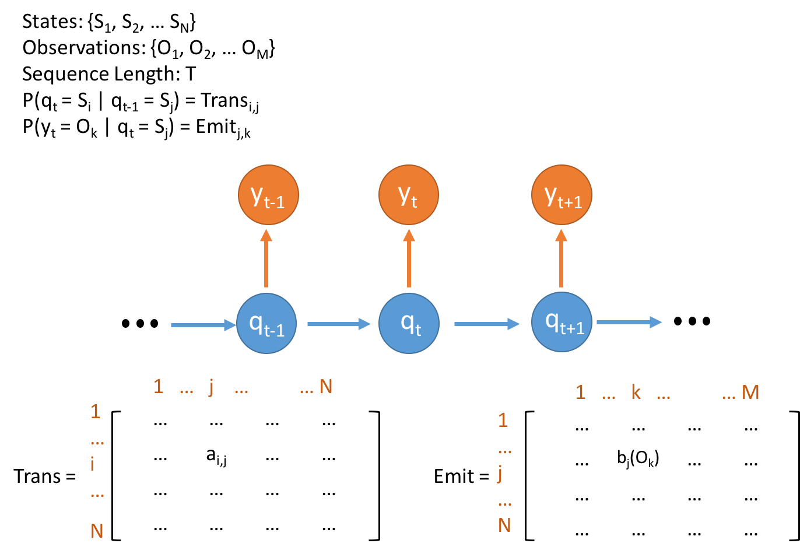

پایتون
پایتون (Python) یک زبان برنامهنویسی محبوب و قدرتمند است. با قواعد ساده و خوانایی بالا، این زبان به برنامهنویسان امکان میدهد به سرعت و با کد کمتر، برنامههای کارآمدی را ایجاد کنند. پایتون به راحتی قابل فهم است و دارای مجموعهای گسترده از کتابخانهها و ابزارهای مفید برای توسعه نرمافزارهاست. از طریق پایتون، میتوانید برنامههای متنوعی را بنویسید، از برنامههای کوچک و تست ساده تا پروژههای بزرگ و پیچیده در حوزههای مختلفی مانند وب، علوم داده، هوش مصنوعی و اینترنت اشیا.
خوشه بندی
خوشهبندی در یادگیری ماشین یک روش مهم است که به تجزیه و تحلیل دادهها بر اساس شباهتهای آنها میپردازد. با استفاده از الگوریتمهایی مانند K-Means و DBSCAN، دادهها به گروههای مشابه یا خوشهها تقسیم میشوند. این فرآیند به کشف الگوها، دستهبندی دادهها و فهم بهتر ساختار دادهها کمک میکند. خوشهبندی در مسائل مختلفی مانند تحلیل دادههای بزرگ، متنکاوی و تشخیص الگو مورد استفاده قرار میگیرد و به بهبود فرآیندهای تصمیمگیری و پیشبینی کمک میکند.

مدل بیزی
مدل بیزی (Bayesian Model) یک روش احتمالاتی است که بر اساس قاعده بیز استنتاج و تحلیل دادهها انجام میشود. این مدل از احتمالات شرطی واقعی و اطلاعات پیشین برای تخمین پارامترهای ناشناخته استفاده میکند. با استفاده از مدل بیزی، میتوان تحلیل دقیقتری از دادهها و توزیع احتمالاتی برای نتایج حاصل شده ارائه کرد. این مدل در حوزههای مختلفی از جمله یادگیری ماشین، تحلیل دادهها، پردازش زبان طبیعی و تصمیمگیری هوشمند استفاده میشود و در ارائه روشهای مبتنی بر احتمالات برای مسائل پیچیده بسیار مؤثر است.

هیدن مارکوف
مدل هیدن مارکو (Hidden Markov Model) یک مدل احتمالاتی است که بر اساس فرضیه هیدن مارکوف و قاعده زنجیرهای، در مورد روند یک سیستم ناشناخته توزیع احتمالاتی مشترک بین ورودیها و خروجیها تصمیم میگیرد. این مدل برای مدلسازی الگوهای زمانی وابسته در دادهها، مانند سریهای زمانی و توالیها، استفاده میشود. مدل هیدن مارکو در حوزههای مختلفی از جمله پردازش زبان طبیعی، تشخیص گفتار، ترجمه ماشینی و تحلیل دادههای زمانی مورد استفاده قرار میگیرد و امکان پیشبینی و تحلیل دقیقتر از روند زمانی دادهها را فراهم میکند.

شبکه عصبی
شبکه عصبی (Neural Network) یک مدل ریاضی است که الهام گرفته از ساختار سیستم عصبی انسان است. این مدل از لایههای متعدد از واحدهای محاسباتی، معمولاً نورونها، تشکیل شده است. اطلاعات از طریق وزنهای متصل بین لایهها جریان دارند و در هنگام آموزش، این وزنها بهبود مییابند. شبکه عصبی برای مسائلی مانند تشخیص الگو، تصویربرداری، ترجمه ماشینی و پیشبینی استفاده میشود. با قدرت پردازش و توانایی یادگیری از دادهها، شبکههای عصبی میتوانند درک و تحلیل پیچیدگیهای بالا را بهبود بخشند و به عنوان یکی از اصلیترین روشها در حوزه یادگیری ماشین محسوب میشوند.
یادگیری تقویتی
یادگیری تقویتی (Reinforcement Learning) یک روش یادگیری ماشینی است که بر اساس تعامل یک عامل با محیط و دریافت پاداشها و جریمهها، بهبود عملکرد عامل را هدف قرار میدهد. در این روش، عامل با استفاده از سیاستها و تجربههای خود، تصمیمهایی میگیرد که بهترین عملکرد را در محیط مورد نظر برای دستیابی به هدف مشخصی ارائه دهد. الگوریتمهایی مانند Q-Learning و Deep Q-Networks (DQN) از یادگیری تقویتی استفاده میکنند. این روش در مسائلی مانند بازیهای کامپیوتری، رباتیک، مدیریت منابع و شبکههای عصبی مصنوعی مورد استفاده قرار میگیرد و بهبود عملکرد و اتخاذ تصمیمهای هوشمندانه را ممکن میسازد.